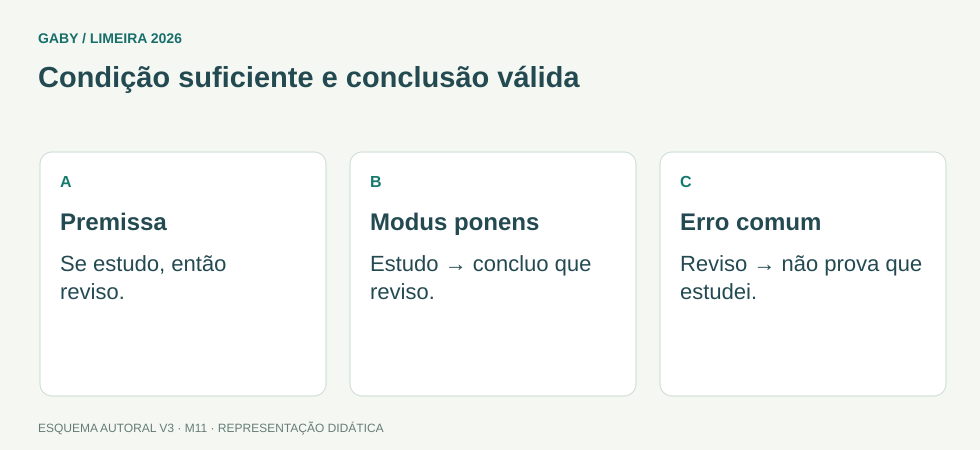

Objetivos do módulo
- Reconhecer proposições e conectivos.
- Negar sentenças simples e compostas.
- Avaliar argumentos básicos sem confundir verdade com validade.
- Distinguir proposição de sentença aberta e contar as linhas de uma tabela-verdade (2ⁿ).
- Montar tabelas-verdade e reconhecer tautologia, contradição e contingência.
- Usar as equivalências da condicional (contrapositiva e ¬p ∨ q), as leis de De Morgan, a distributiva, a absorção e a exportação.
- Negar condicionais, bicondicionais e frases com todo, algum e nenhum.
- Ler condição necessária, condição suficiente, “só se” e “se e somente se”.
- Deduzir conclusões com modus ponens, modus tollens e silogismos, e reconhecer as falácias da condicional.
- Resolver problemas de verdade e mentira testando hipóteses.
Condição suficiente e conclusão válida

Descrição em texto do esquema
- Premissa: Se estudo, então reviso.
- Modus ponens: Estudo → concluo que reviso.
- Erro comum: Reviso → não prova que estudei.
Oficina visual · aplique o esquema
“Se o documento é sigiloso, o acesso é restrito. O acesso não é restrito.” Qual conclusão segue dessas premissas?
Atividade autoral complementar da V3. Registre sua resposta; a resolução está no arquivo de gabarito e revisão.
Mapa do conteúdo
1. Proposição
Proposição é sentença declarativa à qual se pode atribuir valor verdadeiro ou falso. Perguntas, ordens e exclamações normalmente não são proposições no sentido lógico.
Proposição simples e proposição composta
Proposição simples expressa uma única afirmação: “O protocolo foi aberto”. Proposição composta junta proposições simples por meio de conectivos: “O protocolo foi aberto e o prazo começou a correr”. O valor lógico da composta depende apenas dos valores das simples e dos conectivos usados.
Na lógica clássica valem dois princípios. Terceiro excluído: toda proposição é verdadeira (V) ou falsa (F), sem terceira opção. Não contradição: nenhuma proposição é verdadeira e falsa ao mesmo tempo. Uma afirmação falsa continua sendo proposição (“7 é número par” é proposição de valor F). Uma afirmação cujo valor ainda não se conhece também é (“Amanhã vai chover em Limeira” é V ou F, mesmo que só se saiba depois).
| Frase | É proposição? | Motivo |
|---|---|---|
| “Limeira fica no estado de São Paulo.” | Sim (V) | declarativa, com valor lógico |
| “7 é número par.” | Sim (F) | declarativa; ser falsa não a exclui |
| “Entregue o relatório até sexta.” | Não | ordem (frase imperativa) |
| “Quem assinou o ofício?” | Não | pergunta (frase interrogativa) |
| “Que dia bonito!” | Não | exclamação |
| “Esta frase é falsa.” | Não | paradoxo: se fosse V, seria F, e vice-versa |
| “x + 3 = 10” | Não | sentença aberta: o valor depende de x |
Sentença aberta
Sentença aberta (também chamada predicado) é uma frase declarativa com uma ou mais variáveis, isto é, termos sem referência fixa (x, y, “ele”, “ela”), que podem assumir qualquer elemento de um conjunto definido, o conjunto universo. Enquanto a variável não recebe um valor, a sentença não é verdadeira nem falsa. Por isso, sentença aberta não é proposição.
- “x + 3 = 10”, com x no conjunto dos inteiros: para x = 7 vira proposição verdadeira; para x = 2, proposição falsa.
- “Ele é servidor efetivo”: o valor depende de quem é “ele”.
- “x enviou um ofício a y”, com x e y no conjunto dos servidores de uma secretaria: há duas variáveis, o sujeito e o objeto do verbo. Já “Ana enviou um ofício a Rui” é proposição.
Uma sentença aberta vira proposição de duas maneiras:
- Substituindo cada variável por um elemento do universo: “Ana enviou um ofício a Rui”.
- Quantificando as variáveis: “Todo servidor enviou um ofício a algum colega”, “Existe um servidor que enviou ofício a todos”. Palavras como todo, algum, nenhum e “quem” (no sentido de “toda pessoa que”) fecham a sentença.
2. Conectivos
| Símbolo/forma | Leitura | Ideia |
|---|---|---|
| ¬p ou ~p (não p) | negação | valor oposto ao de p |
| p ∧ q (p e q) | conjunção | ambas verdadeiras |
| p ∨ q (p ou q) | disjunção inclusiva | ao menos uma verdadeira |
| p ⊻ q (ou p ou q) | disjunção exclusiva (ou exclusivo) | exatamente uma verdadeira |
| p → q (se p, então q) | condicional | só é falsa com p V e q F |
| p ↔ q (p se e somente se q) | bicondicional | mesmo valor lógico |
Em p → q, p é o antecedente e q é o consequente. O ou exclusivo também aparece escrito como p ⊕ q.
Tabela-verdade completa
A tabela-verdade lista todas as combinações de valores das proposições simples e, em cada linha, o valor da proposição composta. Para duas proposições p e q:
| p | q | ¬p | p ∧ q | p ∨ q | p ⊻ q | p → q | p ↔ q |
|---|---|---|---|---|---|---|---|
| V | V | F | V | V | F | V | V |
| V | F | F | F | V | V | F | F |
| F | V | V | F | V | V | V | F |
| F | F | V | F | F | F | V | V |
- Conjunção: V só na 1ª linha (as duas V).
- Disjunção inclusiva: F só na última linha (as duas F).
- Ou exclusivo: V quando os valores lógicos são diferentes (exatamente um é V).
- Condicional: F só na 2ª linha (antecedente V e consequente F); nas outras três é V.
- Bicondicional: V quando os valores coincidem (V e V, ou F e F).
Quantas linhas tem a tabela-verdade
Cada proposição simples tem 2 valores possíveis. Com n proposições simples distintas, as combinações são 2 × 2 × … × 2 = 2ⁿ linhas.
| Proposições simples (n) | 1 | 2 | 3 | 4 | 5 |
|---|---|---|---|---|---|
| Linhas (2ⁿ) | 2 | 4 | 8 | 16 | 32 |
- Conte proposições simples distintas: (p → q) ∧ (q ∨ ¬p) usa só p e q, logo tem 2² = 4 linhas.
- A negação não cria proposição nova: ¬p usa a mesma p.
- O número de conectivos muda o número de colunas, não o de linhas.
- Em frases, separe cada afirmação: “Se o requerimento estiver completo e assinado, o protocolo será aberto” tem três proposições simples (está completo; está assinado; o protocolo será aberto), logo 2³ = 8 linhas. Erro comum: multiplicar 3 × 2 = 6.
Para não esquecer combinações, na primeira coluna ponha metade das linhas V e metade F; na segunda, alterne em blocos com metade desse tamanho; na última, alterne V, F, V, F. As tabelas de 8 linhas da seção 6 seguem essa ordem.
Valor lógico de uma proposição composta
Substitua os valores das proposições simples e resolva de dentro para fora, como numa expressão numérica: primeiro parênteses e negações, depois ∧ e ∨, por último → e ↔. Exemplo com p V, q F e r F:
- (p ∨ q) ∧ ¬r: p ∨ q = V; ¬r = V; V ∧ V = V.
- (p → q) ∨ r: p → q = V → F = F; F ∨ F = F.
- ¬p ↔ (q ∨ r): ¬p = F; q ∨ r = F; F ↔ F = V.
Tradução entre linguagem simbólica e linguagem corrente
Dê nome às proposições simples, sempre na forma afirmativa (a negação fica no símbolo ¬). Depois ache o conectivo principal, aquele que divide a frase em duas partes, e, se houver condicional, o antecedente e o consequente.
| Em linguagem corrente | Representação simbólica |
|---|---|
| não p; não é verdade que p | ¬p |
| p e q; p, mas q; p, embora q | p ∧ q |
| nem p nem q | ¬p ∧ ¬q |
| p ou q | p ∨ q |
| ou p ou q (mas não ambos); exatamente um de p e q | p ⊻ q |
| se p, então q; quando p, q; sempre que p, q; caso p, q; q, se p | p → q |
| p só se q; p somente se q | p → q |
| p é suficiente para q; q é necessário para p | p → q |
| p se e somente se q | p ↔ q |
Exemplo: A = “o ônibus atrasou”, B = “a aula começou no horário”, C = “a chamada foi feita”. A fórmula ¬A → (B ∧ C) se lê “Se o ônibus não atrasou, então a aula começou no horário e a chamada foi feita”. A frase “Se o ônibus atrasou, então a aula não começou no horário ou a chamada não foi feita” não traduz essa fórmula: ela troca o antecedente e nega o consequente. Com A, B e C verdadeiras, a fórmula é V (antecedente ¬A falso), mas a frase é F (antecedente V e consequente F).
3. Negação
Negar “p e q” produz “não p ou não q”; negar “p ou q” produz “não p e não q” (Leis de De Morgan). Negar “todo A é B” é afirmar “existe pelo menos um A que não é B”.
Dupla negação
Negar duas vezes devolve a proposição original: ¬(¬p) ≡ p. “Não é verdade que o prazo não venceu” equivale a “o prazo venceu”. A regra vale tanto para p verdadeira quanto para p falsa (veja a tabela da seção 6).
Leis de De Morgan na linguagem corrente
- ¬(p ∧ q) ≡ ¬p ∨ ¬q: para negar “p e q”, basta que uma das partes falhe. “Rui assinou e carimbou” tem negação “Rui não assinou ou não carimbou”.
- ¬(p ∨ q) ≡ ¬p ∧ ¬q: para negar “p ou q”, as duas partes precisam falhar. “Rui assinou ou carimbou” tem negação “Rui não assinou e não carimbou”, que também se diz “Rui não assinou nem carimbou”.
Por isso, a forma com “nem… nem” é a negação de uma disjunção, não de uma conjunção. Ela exige as duas negações e falha, por exemplo, se Rui assinou mas não carimbou.
Negação da condicional
A condicional p → q só é falsa quando o antecedente acontece e o consequente não. Logo, ¬(p → q) ≡ p ∧ ¬q: mantém o antecedente, nega o consequente e troca “se… então” por “e”.
- “Se a nota fiscal chegou, o pagamento foi liberado.” Negação: “A nota fiscal chegou e o pagamento não foi liberado”.
- Não servem como negação: “Se a nota fiscal não chegou, o pagamento não foi liberado” (é a inversa) nem “Se a nota fiscal chegou, o pagamento não foi liberado”. Esta última ainda é uma condicional e pode ser verdadeira junto com a original: basta a nota não ter chegado.
- Com partes compostas, aplique De Morgan no consequente: ¬(A → (¬B ∨ ¬C)) ≡ A ∧ B ∧ C.
Negação da bicondicional e ou exclusivo
A bicondicional p ↔ q é V quando os valores coincidem. Sua negação é V exatamente quando os valores lógicos são diferentes, que é a definição do ou exclusivo: ¬(p ↔ q) ≡ p ⊻ q ≡ p ↔ ¬q.
Exemplo: “O contrato é renovado se e somente se o orçamento é aprovado”. Negação: “Ou o contrato é renovado ou o orçamento é aprovado, mas não ambos”, ou seja, exatamente um dos dois acontece.
Negação com todo, algum e nenhum
| Frase | Negação correta | Erro comum |
|---|---|---|
| Todo A é B | Algum A não é B (existe pelo menos um A que não é B) | Nenhum A é B |
| Algum A é B | Nenhum A é B | Algum A não é B |
| Nenhum A é B | Algum A é B | Todo A é B |
| Algum A não é B | Todo A é B | Algum A é B |
Para derrubar uma afirmação universal (todo) basta um contraexemplo. Para negar uma existencial (algum, existe pelo menos um) é preciso afirmar que não existe nenhum caso. “Algum relatório não foi aprovado” não nega “algum relatório foi aprovado”: as duas podem ser verdadeiras ao mesmo tempo.
Quantificadores encadeados
O quantificador universal ∀ se lê “para todo”; o existencial ∃ se lê “existe pelo menos um”. Quando há dois quantificadores, a ordem importa:
- “Para toda sala existe uma chave que a abre”: cada sala tem a sua chave, que pode ser diferente de uma sala para outra.
- “Existe uma chave que abre todas as salas”: uma mesma chave (chave mestra) serve para todas.
A segunda implica a primeira, mas a primeira não implica a segunda. Para negar, troque cada quantificador (todo por existe, existe por todo) e negue a parte final: ¬(∀x ∃y P) ≡ ∃x ∀y ¬P. “Todo servidor concluiu algum curso” tem negação “Existe pelo menos um servidor que não concluiu nenhum curso”.
4. Condicional e contrapositiva
“Se p então q” é equivalente a “se não q então não p” (contrapositiva). Não é equivalente à recíproca “se q então p” nem à inversa “se não p então não q”.
Antecedente, consequente e a tabela da condicional
A condicional é uma promessa: sempre que o antecedente ocorre, o consequente ocorre. “Se o setor bater a meta, haverá folga na sexta” só é quebrada se a meta for batida e não houver folga. Se a meta não for batida, a promessa não foi descumprida, qualquer que seja o resultado; por isso a condicional com antecedente falso é verdadeira. Das 4 combinações, 3 tornam p → q verdadeira.
| p | q | p → q | ¬q → ¬p (contrapositiva) | ¬p ∨ q | q → p (recíproca) | ¬p → ¬q (inversa) | p ∧ ¬q (negação) |
|---|---|---|---|---|---|---|---|
| V | V | V | V | V | V | V | F |
| V | F | F | F | F | V | V | V |
| F | V | V | V | V | F | F | F |
| F | F | V | V | V | V | V | F |
As colunas de p → q, da contrapositiva e de ¬p ∨ q são idênticas: são equivalentes. A recíproca e a inversa coincidem entre si, mas diferem de p → q na 2ª e na 3ª linhas. A coluna de p ∧ ¬q é o oposto exato de p → q: é a negação.
Formas equivalentes da condicional
- Contrapositiva: p → q ≡ ¬q → ¬p (troca a ordem e nega as duas partes). “Se o arquivo foi aprovado, foi revisado” equivale a “Se o arquivo não foi revisado, não foi aprovado”.
- Como disjunção: p → q ≡ ¬p ∨ q (“não p ou q”). “Se chover, o evento é adiado” equivale a “Não chove ou o evento é adiado”.
- Como negação de conjunção: p → q ≡ ¬(p ∧ ¬q). “Não é verdade que chove e o evento não é adiado”.
Combinando com De Morgan: “Se A, então não B” equivale a ¬A ∨ ¬B, que equivale a ¬(A ∧ B). Exemplo: “Se o servidor está de férias, não assina o ponto” equivale a “Não é verdade que o servidor está de férias e assina o ponto”.
Contrapositiva com partes compostas: negue cada parte com De Morgan. R → (V ∧ S) tem contrapositiva (¬V ∨ ¬S) → ¬R: “Se o relatório está pronto, foi revisado e assinado” equivale a “Se o relatório não foi revisado ou não foi assinado, não está pronto”.
Condição suficiente e condição necessária
Quando p → q é verdadeira, p é condição suficiente para q (basta p para garantir q) e q é condição necessária para p (sem q não há p). Exemplo numérico: “Se n é múltiplo de 4, então n é par”. Ser múltiplo de 4 é suficiente para ser par; ser par é necessário para ser múltiplo de 4, mas não é suficiente: 10 é par e não é múltiplo de 4.
- “p só se q” e “p somente se q” significam p → q: q é condição necessária. “O candidato só toma posse se apresentar o atestado médico” quer dizer posse → atestado. O atestado é exigido, mas pode não bastar, pois podem existir outros requisitos.
- “p se q” significa q → p (atenção à ordem).
- Uma frase que diz só “se p, então q” mostra que p é suficiente; não mostra que p é necessário, pois q pode ocorrer por outro motivo.
- “p é condição necessária e suficiente para q” é a bicondicional p ↔ q.
Bicondicional
p ↔ q equivale a (p → q) ∧ (q → p): é a condicional junto com a sua recíproca. É verdadeira quando p e q têm o mesmo valor lógico. A bicondicional é transitiva: se p ↔ q e q ↔ r são verdadeiras, p tem o mesmo valor de q, que tem o mesmo valor de r; logo p ↔ r é verdadeira. Isso não diz se as três são V ou se as três são F. Exemplo: “O ponto é abonado se e somente se a chefia autoriza” e “A chefia autoriza se e somente se há reposição de horas” levam a “O ponto é abonado se e somente se há reposição de horas”.
5. Validade de argumentos
Argumento válido é aquele em que, se as premissas forem verdadeiras, a conclusão não pode ser falsa. Isso é propriedade da forma, não garantia de que as premissas são de fato verdadeiras.
Verdade não é validade
Um argumento é formado por premissas e uma conclusão. Um argumento válido pode ter conclusão falsa, se alguma premissa for falsa. Um argumento inválido pode ter conclusão verdadeira por acaso. A validade depende só da forma: se as premissas forem verdadeiras, a conclusão tem de ser.
Como testar a validade: procurar um contraexemplo
- Represente premissas e conclusão em símbolos.
- Suponha a conclusão falsa.
- Tente, com essa suposição, tornar todas as premissas verdadeiras.
- Se conseguir, achou um contraexemplo (premissas verdadeiras e conclusão falsa): o argumento é inválido. Se for impossível, o argumento é válido.
Pela tabela-verdade, o teste é o mesmo: olhe só as linhas em que todas as premissas são V. O argumento é válido se a conclusão é V em todas essas linhas.
Exemplo: “Se há greve, as aulas são suspensas. Se as aulas são suspensas, o calendário é refeito. O calendário foi refeito. Logo, houve greve.” Faça greve F, aulas suspensas V e calendário refeito V: as três premissas ficam V e a conclusão fica F. Há contraexemplo; o argumento é inválido.
Formas válidas de dedução
| Nome | Forma | Exemplo |
|---|---|---|
| Modus ponens (afirmar o antecedente) | p → q; p; logo q | Se o ofício foi protocolado, recebeu número. Foi protocolado. Logo, recebeu número. |
| Modus tollens (negar o consequente) | p → q; ¬q; logo ¬p | Se o ofício foi protocolado, recebeu número. Não recebeu número. Logo, não foi protocolado. |
| Silogismo hipotético (cadeia de condicionais) | p → q; q → r; logo p → r | Se chove, a obra para. Se a obra para, o prazo é prorrogado. Logo, se chove, o prazo é prorrogado. |
| Silogismo disjuntivo | p ∨ q; ¬p; logo q | O processo está na chefia ou no arquivo. Não está na chefia. Logo, está no arquivo. |
| Prova por casos (dilema) | p ∨ q; p → r; q → r; logo r | O aviso vai por e-mail ou por carta. Se vai por e-mail, fica registrado; se vai por carta, também fica registrado. Logo, fica registrado. |
- No silogismo hipotético, os condicionais se encadeiam: com p → q, q → r e p verdadeira, o modus ponens aplicado duas vezes dá q e depois r. Com ¬r, o modus tollens aplicado duas vezes dá ¬q e depois ¬p. A cadeia não vale no sentido inverso: dela não sai r → p.
- O silogismo disjuntivo usa o ou inclusivo: de p ∨ q e p não se conclui ¬q, pois as duas podem ser verdadeiras.
- Na prova por casos, r decorre em todos os casos permitidos pela disjunção, sem precisar saber qual deles ocorreu.
Falácias da condicional
| Falácia | Forma inválida | Contraexemplo |
|---|---|---|
| Afirmação do consequente | p → q; q; logo p | p F e q V: as premissas são V e a conclusão é F |
| Negação do antecedente | p → q; ¬p; logo ¬q | p F e q V: as premissas são V e a conclusão ¬q é F |
“Se a impressora está sem papel, a luz pisca. A luz pisca. Logo, está sem papel.” A luz pode piscar por outro motivo, como falta de tinta: afirmar o consequente não prova o antecedente. “A impressora tem papel. Logo, a luz não pisca.” Também é inválido: negar o antecedente não nega o consequente. Nos dois casos, a conclusão correta é que nada se pode afirmar.
Deduzir a partir de premissas
Comece pela premissa simples (uma afirmação ou negação sem conectivo), que dá um valor certo. Leve esse valor às premissas compostas: um consequente falso derruba o antecedente (modus tollens); um antecedente verdadeiro garante o consequente (modus ponens); uma parte falsa de um “ou” garante a outra (silogismo disjuntivo). Repita até chegar à conclusão. Se ficar uma combinação livre, procure um contraexemplo antes de aceitar a conclusão.
Premissas inconsistentes
Premissas são inconsistentes (incompatíveis) quando nenhuma valoração torna todas verdadeiras ao mesmo tempo. Exemplo: p ∨ q, ¬p e ¬q. As duas negações tornam p e q falsas, e então p ∨ q fica falsa. Para testar, tente tornar todas as premissas verdadeiras; se chegar a uma contradição, elas são inconsistentes. Na lógica clássica, um argumento com premissas inconsistentes é considerado válido para qualquer conclusão, pois não existe linha com todas as premissas verdadeiras, e portanto não existe contraexemplo. Mas esse argumento não prova nada sobre a realidade.
6. Tautologia, contradição e equivalências
Uma proposição composta é tautologia quando é verdadeira em todas as linhas da tabela-verdade, contradição quando é falsa em todas, e contingência quando é verdadeira em umas e falsa em outras. A negação de uma tautologia é uma contradição, e vice-versa.
| p | ¬p | ¬(¬p) | p ∨ ¬p | p ∧ ¬p | p → ¬p |
|---|---|---|---|---|---|
| V | F | V | V | F | F |
| F | V | F | V | F | V |
- p ∨ ¬p é tautologia: em qualquer caso, uma das partes é V.
- p ∧ ¬p é contradição: p e ¬p nunca são V juntas.
- p → ¬p é contingência: é V quando p é F e F quando p é V.
- A coluna de ¬(¬p) é igual à de p: é a dupla negação.
Equivalência lógica
Duas proposições são equivalentes (símbolo ≡) quando têm colunas idênticas na tabela-verdade, ou seja, quando a bicondicional entre elas é uma tautologia. Uma equivalência permite trocar uma frase pela outra sem mudar o valor lógico. Do mesmo modo, um argumento é válido quando “premissas juntas → conclusão” é uma tautologia.
| Nome | Equivalência |
|---|---|
| Dupla negação | ¬(¬p) ≡ p |
| Comutativa | p ∧ q ≡ q ∧ p; p ∨ q ≡ q ∨ p |
| Associativa | (p ∧ q) ∧ r ≡ p ∧ (q ∧ r); (p ∨ q) ∨ r ≡ p ∨ (q ∨ r) |
| Distributiva | p ∧ (q ∨ r) ≡ (p ∧ q) ∨ (p ∧ r); p ∨ (q ∧ r) ≡ (p ∨ q) ∧ (p ∨ r) |
| De Morgan | ¬(p ∧ q) ≡ ¬p ∨ ¬q; ¬(p ∨ q) ≡ ¬p ∧ ¬q |
| Absorção | p ∨ (p ∧ q) ≡ p; p ∧ (p ∨ q) ≡ p |
| Condicional | p → q ≡ ¬p ∨ q ≡ ¬q → ¬p |
| Bicondicional | p ↔ q ≡ (p → q) ∧ (q → p) |
| Exportação | p → (q → r) ≡ (p ∧ q) → r |
Distributiva
Funciona como a distributiva da álgebra, a × (b + c) = a × b + a × c. “Ana viaja e (vai de ônibus ou de carro)” equivale a “(Ana viaja e vai de ônibus) ou (Ana viaja e vai de carro)”. Em símbolos, p ∧ (q ∨ r) só é V se p vale junto com ao menos uma de q e r. Com três proposições simples, a conferência usa 2³ = 8 linhas:
| p | q | r | q ∨ r | p ∧ (q ∨ r) | p ∧ q | p ∧ r | (p ∧ q) ∨ (p ∧ r) |
|---|---|---|---|---|---|---|---|
| V | V | V | V | V | V | V | V |
| V | V | F | V | V | V | F | V |
| V | F | V | V | V | F | V | V |
| V | F | F | F | F | F | F | F |
| F | V | V | V | F | F | F | F |
| F | V | F | V | F | F | F | F |
| F | F | V | V | F | F | F | F |
| F | F | F | F | F | F | F | F |
Cuidado com os parênteses: p ∧ (q ∨ r) não equivale a (p ∧ q) ∨ r. Com p F, q F e r V, a primeira é F e a segunda é V.
Absorção
Em p ∨ (p ∧ q), se p é V a disjunção já é V; se p é F, as duas partes são F. O resultado coincide sempre com p, e q é “absorvida”. Exemplo: “O arquivo foi salvo, ou foi salvo e enviado” equivale a “O arquivo foi salvo”.
| p | q | p ∧ q | p ∨ (p ∧ q) | p ∨ q | p ∧ (p ∨ q) |
|---|---|---|---|---|---|
| V | V | V | V | V | V |
| V | F | F | V | V | V |
| F | V | F | F | V | F |
| F | F | F | F | F | F |
Exportação
Uma condicional dentro de outra pode ser reescrita com “e” no antecedente: p → (q → r) ≡ (p ∧ q) → r. “Se o contrato for assinado, então, se o depósito for feito, a obra começa” equivale a “Se o contrato for assinado e o depósito for feito, a obra começa”. As duas só são falsas quando p e q são V e r é F:
| p | q | r | q → r | p → (q → r) | p ∧ q | (p ∧ q) → r |
|---|---|---|---|---|---|---|
| V | V | V | V | V | V | V |
| V | V | F | F | F | V | F |
| V | F | V | V | V | F | V |
| V | F | F | V | V | F | V |
| F | V | V | V | V | F | V |
| F | V | F | F | V | F | V |
| F | F | V | V | V | F | V |
| F | F | F | V | V | F | V |
7. Quantificadores e silogismos categóricos
Frases com todo, nenhum e algum (as proposições categóricas) se leem como relações entre conjuntos. Um diagrama de Venn, com um círculo para cada conjunto, mostra o que cada uma garante.
| Frase | Em conjuntos | No diagrama |
|---|---|---|
| Todo A é B | A está contido em B | círculo A inteiro dentro de B |
| Nenhum A é B | A e B não têm elemento comum (interseção vazia) | círculos separados |
| Algum A é B | existe pelo menos um elemento em A e em B | interseção com pelo menos um elemento marcado |
| Algum A não é B | existe pelo menos um elemento de A fora de B | parte de A fora de B com um elemento marcado |
Em lógica, “algum” quer dizer “pelo menos um, podendo ser todos”. Por isso, “algum A é B” não garante que “algum A não é B”.
Universal sobre conjunto vazio
“Todo A é B” significa: para todo x, se x pertence a A, então x pertence a B. Ela só seria falsa se existisse um A fora de B. Se A for vazio, não existe esse contraexemplo e a afirmação universal é verdadeira (diz-se que é verdadeira por vacuidade). Exemplo: “Todo pedido de férias protocolado no domingo foi aprovado” é verdadeira se nenhum pedido foi protocolado no domingo. Consequência: “todo A é B” sozinho não afirma que existe algum A, e por isso não permite concluir “algum A é B” sem saber que A tem elementos.
Como concluir com diagramas
Desenhe as premissas de todas as maneiras que elas permitem. Uma conclusão só é necessária se aparecer em todos os desenhos possíveis; se houver um desenho que satisfaz as premissas e contraria a conclusão, ele é o contraexemplo.
- Todo + nenhum: “Todo gato é mamífero. Nenhum mamífero é réptil.” O círculo dos gatos fica dentro do dos mamíferos, que é separado do dos répteis. Conclusão necessária: nenhum gato é réptil.
- Algum + todo: “Algum motorista é mecânico. Todo mecânico é sindicalizado.” Os motoristas que são mecânicos estão dentro dos sindicalizados. Conclusão necessária: algum motorista é sindicalizado (não “todo motorista”).
- Dois “todo” para o mesmo conjunto: “Todo engenheiro é graduado. Todo advogado é graduado.” Os dois círculos podem ficar separados dentro do círculo dos graduados. Não se conclui nada entre engenheiros e advogados.
- Dois “algum” não se encadeiam: “Algum professor é escritor. Algum escritor é pintor.” O escritor que é professor pode ser uma pessoa e o escritor que é pintor, outra. Não se conclui que algum professor é pintor.
- “Todo” não se inverte: “todo A é B” não implica “todo B é A”.
Contraexemplo de uma universal: “Todo número primo é ímpar” é falsa, porque 2 é primo e é par. Um único caso basta.
8. Problemas de verdade e mentira
Nesses problemas, algumas pessoas dizem a verdade e outras mentem, e é dada uma condição (quantos mentem, quantos são culpados). O método é testar hipóteses:
- Escreva o que cada pessoa afirma, como proposição.
- Anote a condição do problema (exemplo: exatamente um diz a verdade).
- Suponha uma hipótese (por exemplo, “o culpado é X” ou “a pessoa Y mente”) e deduza o valor de cada fala.
- Se a hipótese gerar uma contradição ou violar a condição, descarte-a.
- A hipótese que sobra é a resposta; confira todas as falas com ela.
- Se A diz “B mente”, as falas de A e B têm valores opostos. Se A diz “B diz a verdade”, têm o mesmo valor.
- Duas falas contraditórias (uma diz p e a outra diz ¬p): exatamente uma delas é verdadeira. É um bom ponto de partida.
- Quem mente afirma algo falso, então vale a negação da fala. Se “o culpado é X ou Y” é mentira, por De Morgan nem X nem Y é culpado.
Exemplos resolvidos passo a passo
Exemplo 1
Situação: Negue: “João estuda e trabalha”.
Exemplo 2
Situação: Se chove, a rua molha. A rua não molhou.
Exemplo 3
Situação: Negue “Todos os documentos estão assinados”.
Exemplo 4
Situação: “Se o requerimento estiver completo e o prazo não tiver vencido, então o pedido será analisado ou devolvido.” Quantas linhas tem a tabela-verdade? Qual o valor lógico se o requerimento está completo, o prazo não venceu e o pedido não foi analisado nem devolvido?
Exemplo 5
Situação: Negue: “Se o servidor foi convocado, então compareceu e assinou a lista”.
Exemplo 6
Situação: Premissas: “O processo está na chefia ou no arquivo”; “Se está no arquivo, foi digitalizado”; “Não foi digitalizado”. O que se conclui?
Exemplo 7
Situação: Uma das três colegas, Ana, Bia ou Cris, esqueceu a sala aberta. Ana diz: “Foi a Bia”. Bia diz: “Não fui eu”. Cris diz: “Não fui eu”. Sabe-se que exatamente uma delas diz a verdade. Quem esqueceu a sala aberta?
Pegadinhas e erros frequentes
- Negar “todos” por “nenhum”.
- Confundir inversa com contrapositiva.
- Tratar “ou” lógico como necessariamente exclusivo.
- Tratar sentença aberta (com variável livre) como proposição.
- Calcular as linhas da tabela-verdade como 2 × n em vez de 2ⁿ, ou contar como nova uma proposição repetida ou negada.
- Negar “se p, então q” com outra condicional; a negação é “p e não q”.
- Usar “nem p nem q” como negação de “p e q”; ela nega “p ou q”.
- Confundir a recíproca (q → p) com a contrapositiva (¬q → ¬p).
- Ler “p só se q” como q → p; o correto é p → q.
- Concluir afirmando o consequente ou negando o antecedente.
- Negar “algum A é B” com “algum A não é B”; o correto é “nenhum A é B”.
- Trocar a ordem dos quantificadores: “para todo… existe” não equivale a “existe… para todo”.
- Achar que “todo A é B” é falsa quando não há nenhum A, ou que ela garante a existência de A.
- Encadear dois “alguns” para tirar uma conclusão.
- Em itens Certo/Errado, julgar a frase pelo sentido comum em vez de testar um contraexemplo.
Resumo de prova
- Proposição tem valor V/F.
- Conjunção exige ambos V.
- Condicional só é falsa em V→F.
- Contrapositiva é equivalente.
- Negação de “todos” = “existe ao menos um que não”.
- Sentença aberta tem variável: só vira proposição ao substituir ou quantificar.
- Tabela-verdade: 2ⁿ linhas (n = proposições simples distintas).
- p → q ≡ ¬q → ¬p ≡ ¬p ∨ q; recíproca e inversa não equivalem.
- ¬(p → q) ≡ p ∧ ¬q.
- ¬(p ↔ q) ≡ ou exclusivo: valores lógicos diferentes.
- De Morgan: ¬(p ∧ q) ≡ ¬p ∨ ¬q; ¬(p ∨ q) ≡ ¬p ∧ ¬q.
- Dupla negação, distributiva, absorção e exportação.
- Tautologia sempre V; contradição sempre F; contingência varia.
- p só se q: p → q; p é suficiente, q é necessária.
- Válidos: modus ponens, modus tollens, silogismo hipotético, silogismo disjuntivo, prova por casos.
- Falácias: afirmar o consequente, negar o antecedente.
- Inválido = existe contraexemplo (premissas V e conclusão F).
- Negação de “algum” = “nenhum”; universal sobre conjunto vazio é V.
- Verdade e mentira: suponha, deduza, descarte o que contradiz.
Exercícios do módulo
Resolva sem consultar o arquivo de gabarito. As questões são autorais e construídas para treinar os conceitos do edital.
- proposição verdadeira
- proposição falsa
- bicondicional
- não proposição
- Ana trabalha
- Ana estuda
- Ana não estuda ou não trabalha
- Ana não estuda e não trabalha necessariamente
- Alguns passaram
- Ninguém passou
- Pelo menos um não passou
- Todos não passaram
- p V e q F
- p F e q V
- ambas V
- ambas F
- Se não q, então não p
- Se não p, então não q
- p e q
- Se q, então p
- ambas falsas
- p é falsa sempre
- ao menos uma é verdadeira
- exatamente uma sempre
- não usa lógica
- preserva verdade das premissas para conclusão
- tem premissas necessariamente verdadeiras no mundo
- é sempre longo
- Nenhum aluno faltou
- Todo aluno faltou
- Algum não faltou
- Todos faltaram
- Se passo, então estudei
- condicional original
- contrapositiva
- Se não passo, então não estudei
- apenas q é verdadeira
- sempre
- p e q têm mesmo valor lógico
- apenas p é verdadeira
Quando terminar, abra Raciocínio Lógico 11 - Estruturas e Argumentação Lógica - Gabarito e Revisão.
Checklist de domínio
- ☐ Reconhecer proposições e conectivos.
- ☐ Negar sentenças simples e compostas.
- ☐ Avaliar argumentos básicos sem confundir verdade com validade.
- ☐ Distinguir proposição de sentença aberta.
- ☐ Contar as linhas de uma tabela-verdade e montá-la completa.
- ☐ Classificar uma fórmula como tautologia, contradição ou contingência.
- ☐ Aplicar contrapositiva, ¬p ∨ q, De Morgan, distributiva, absorção e exportação.
- ☐ Negar condicional, bicondicional e frases com todo, algum e nenhum.
- ☐ Identificar condição necessária e condição suficiente.
- ☐ Deduzir com modus ponens, modus tollens e silogismos, e apontar falácias.
- ☐ Resolver problemas de verdade e mentira por hipóteses.
Meta do módulo: 80% ou mais nas questões, sem depender de consulta.
Referências e conteúdos auxiliares
- IMPA/OBMEP — Introdução à Lógica MatemáticaMateriais e videoaulas introdutórias para raciocínio e linguagem lógica.
- OBMEP/IMPA — A Linguagem dos Teoremas, Parte IDefinição de proposição (e frases que não são), tabelas-verdade de negação, conjunção, disjunção, ou exclusivo, condicional e bicondicional; contrapositiva, recíproca e inversa; condição necessária e suficiente; prioridade dos conectivos. Conferido em 18/11/2026.
- OBMEP/IMPA — A Linguagem dos Teoremas, Parte IITabela-verdade com 2ⁿ linhas; tautologia, contradição e contingência; equivalência; De Morgan, distributivas, contrapositiva, p → q ≡ ¬p ∨ q, bicondicional como condicional e recíproca; proposições inconsistentes; validade, modus ponens, modus tollens, silogismo hipotético e afirmação do consequente. Conferido em 18/11/2026.
- OBMEP/IMPA — Expandindo o VocabulárioSentenças abertas (predicados) e conjunto universo; quantificadores universal e existencial e suas negações; ordem dos quantificadores; enunciados categóricos e diagramas de Venn. Conferido em 18/11/2026.
- OBMEP/IMPA — O ContraexemploRefutação de uma afirmação universal por um único contraexemplo. Conferido em 18/11/2026.
- UFMG (DCC) — Lógica Proposicional, Matemática DiscretaProposição como sentença declarativa; “x + 2 = 3” não é proposição; ou exclusivo; tautologia, contradição e contingência; equivalências de dupla negação, distributiva, De Morgan e absorção. Conferido em 18/11/2026.
- UFMG (DCC) — Regras de Inferência, Matemática DiscretaDefinição de argumento válido; modus ponens, modus tollens, silogismo hipotético e silogismo disjuntivo; falácias da afirmação do consequente e da negação do antecedente. Conferido em 18/11/2026.
- UFMG (DCC) — Estruturas Básicas: Conjuntos, Introdução à Lógica ComputacionalCondicional universal sobre o conjunto vazio, verdadeira por vacuidade. Conferido em 18/11/2026.
- UFRJ (COPPE) — Lógica para Ciência da Computação, Lista 5: EquivalênciaEquivalências p → q ≡ ¬(p ∧ ¬q) e p → q ≡ ¬p ∨ q, absorção, dupla negação, distributivas e De Morgan. Conferido em 18/11/2026.
Referências externas de apoio consultadas para a V3 em 27/09/2026. A origem das questões é o material autoral do projeto; estes links não indicam que uma instituição publicou ou validou os exercícios. As páginas externas precisam de internet. Em informática, confira a versão do programa; em legislação, observe o recorte e as regras de atualização do edital.